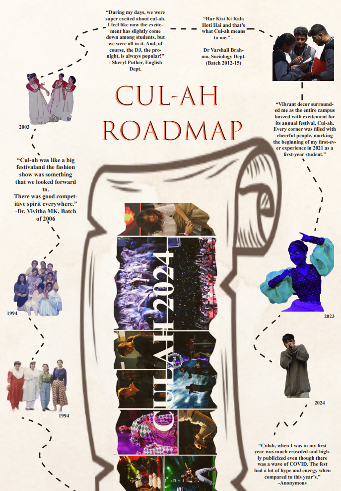

In the grand chronicle of questionable decisions made during
moments of stress, the saga of your impromptu bang-trimming
session with the kitchen scissors stands out as a testament to the
lengths you will go for a semblance of control. There you were, on
a soul-stormy Tuesday, staring into the mirror and thinking, “Yes,
bangs are the missing piece to my life puzzle.” And not just any
bangs, but the kind you see on effortlessly chic individuals who
drink black coffee and read philosophy for fun.
Armed only with determination and scissors better suited for
wrestling open pasta packages, you dove into this follicular (that
sounded needlessly disgusting) journey. The first snip was thrilling, a bold claim of independence in an unpredictable world. Yet,
by the third snip, as hair piled up on the floor like confetti after a
wild party, you realized your inner stylist might have been overly
optimistic. The mirror now reflected less of a ‘Parisian philosopher’
and more ‘craft project by a particularly enthusiastic six-year-old.’
You feel the laughter bubbling up. You can suddenly relate to
Claire from Fleabag (“I LOOK LIKE A PENCIL!!”). Frankly
speaking, life sucked. But god, anything was better than the current mop on your head. Despite the mishap, grabbing a hat to hide
your daring do (and to avoid your best friend’s inevitable horror),
you couldn’t help but find joy in the chaos. This impulsive makeover was a wild grab for control, but it taught you the beauty of
letting go and embracing life’s unpredictable moments. And really,
isn’t the point of having control over your life knowing when to let
go and find humor in the chaos? Because it’s fine. Your hair will
grow back. Maybe this is the sign you needed to go bald.
The brand-new Carmel Archives, version 2020 does not boast any ancient artifacts,
rare manuscripts, or any of that kind. But it does have ample old photographs and
journals of students and staff and their contributions. There are several articles
and heartfelt poems from those studying here 20-30 years ago, and when we brushed
through them, we felt the relatableness to surely exist today too. The old typewriters,
the grand piano, the old Convent nun uniform which is strikingly similar to that from the
movies, and even the random rocks in the commerce section may be items you have never
seen before, other than on the internet.
Later, calling your best friend only to have her hang up at the
sight of your new ‘do? Priceless.
And then, you hear the lock of the front door click. Your parents
are home.
Oh no.
- Mahi Aneja, Nicole Dsouza
Valentine’s Day: A time for lovers, flowers, and endless amounts of heart-shaped… well, everything. It’s a day where love is celebrated in all its forms, manifesting in grand gestures and whispered sweet nothings. But what if you’re not on board the love train this February 14th? Fear not! Who says you need Cupid’s arrow to have a blast? For those skipping the romance but craving some good vibes, we’ve got you covered. Whether you’re happily single, in a relationship, or just seeking a different form of pleasure, don’t worry—the world of movies provides a huge getaway.
1. Blue Valentine:
We had to start with the namesake of the article. Starring
Ryan Gosling, ‘Blue Valentine’
is a heart-wrenching exploration of love’s lifecycle, from
the dizzying heights of passion
to the inevitable descent into
heartbreak.
OTT: Amazon Prime
2. Gone Girl:
We’ve all seen our parents’
low-key toxic marriages, but
this film is the ultimate guide to
why sometimes, ‘till death do us
part’ might just involve a clever
disguise and a one-way ticket…
to hell.
OTT: Netflix, Amazon Prime
Premium, Apple TV
3. The Break Up:
A comedic reminder that splitting the dishes can be harder
than splitting up. This movie, starring Jennifer Anniston,
shows us how how breaking up
isn’t just ‘hard to do’. It’s a fullblown strategy game.
OTT: Jio Cinema
4. Kill Bill:
*Hums* “I might… I might kill
my ex” A love story with a twist:
instead of getting back together,
she gets a sword. And is absolutely and amazingly badass. (I
mean, it’s Uma Thurman. That’s
all.)
OTT: Amazon Prime, Apple
TV
5. Darlings:
A dark comedy, starring Alia
Bhatt and Shefali Shah as a
mother-daughter duo who navigate love’s lost labour, which
gets a little too literal with a side
of sweet, sweet revenge.
OTT: Netflix
6. Why Women Kill:
A stylish blend of eras and murders that puts a whole new spin
on the vows of marriage. This
series proves that the deadliest
weapon in a woman’s arsenal
isn’t poison or a knife; it’s her
wit, and makes you wonder if
love is truly eternal, or just waiting for the murder plot twist.
OTT: Jio Cinema
7. Bulbul:
A gothic romance that turns into
a vengeful fairy tale, proving
that sometimes the monster under the bed is nothing compared
to the demons in our relationships. Remember: the scariest
part of a relationship isn’t the
end—it’s what comes after.
OTT: Netflix
8. La La Land:
A jazzy romance that dances
around the truth: sometimes,
love is about chasing dreams,
even if it means missing out on
the perfect duet partner. If the
ending doesn’t make you lose
your faith in love, then please,
give us your optimism. Please.
OTT: Apple TV
- Mahi Aneja

© THE CARMEL BEAT. ALL RIGHTS RESERVED.